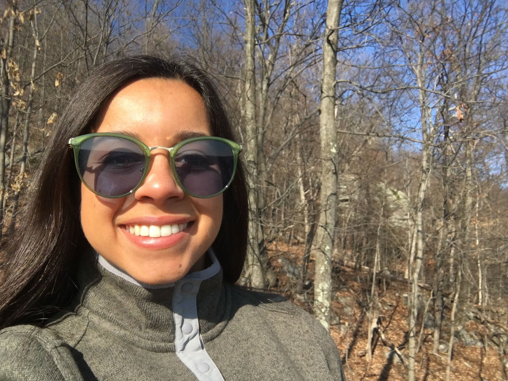

Introduction
I am a born and raised New Jerseyian attending Stevens Institute of Technology. I am from Bergen County which is a convenient location because I can be at the beach, the mountains, or the city within an hour. The mountains are my playground, I grew up hiking at Harriman State Park with my father and spent a lot of time there during the beginning of the COVID-19 pandemic. Prior to the pandemic, I had only hiked in New Jersey and New York, but in October 2020, I hiked the Bonds Traverse in New Hampshire which is 20 miles with 3776 ft elevation. In 2021, I plan to go to Shenandoah Valley to explore the National Park, hike Mt. Katahdin in Maine, as well as go on weekend hikes in the Catskills.
Beyond hiking, I spend a lot of time reading, baking and running. I read a variety of genres but I have been reading technology and outdoors nonfiction. Currently. I am reading North, Finding My Way While Running the Appalachian Trail by Scott Jurek and Jenny Jurek. It is about Scott Jurek, an ultramarathoner and his journey running the Appalachian Trail as a middle-aged adult nearing the end of his ultramarathoning career. Works like this inspire me to push my physical boundaries and push myself to run longer distances and hike more difficult terrain.
If I want to relax or take my mind of school-work, I park myself in the kitchen for an hour or two or bake. In the summer of 2020, I found out that I have celic disease so I found it difficult to find substitutes for the foods I enjoyed. Ever since, I've been getting creative with my cooking and found a love for trying new recipes, especially desserts. My favorite recipe I discovered was an apple cider bundt cake, it is to die for.